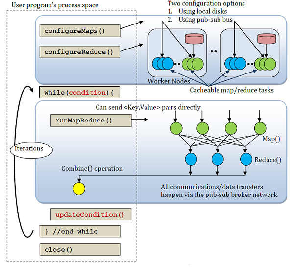

Using Map/Reduce in FutureGrid¶
This chapter contains information in regards to Platform as a Service offerings on FutureGrid
As the computing landscape becomes increasingly data-centric, data-intensive computing environments are poised to transform scientific research. In particular, MapReduce based programming models and run-time systems such as the open-source Hadoop system have increasingly been adopted by researchers with data-intensive problems, in areas including bio-informatics, data mining and analytics, and text processing.
FutureGrid provides capabilities that allow users to experiment with MapReduce applications and middleware, including the widely-used Hadoop platform and the iterative map/reduce Twister plaftorm. There are different ways you may want to use MapReduce platforms in the testbed. This page guides you in selecting from FutureGrid capabilities that are best suited depending on your goals, and links to respective tutorials.
MapReduce on Physical Machines¶
While there exist MapReduce systems that run on virtual machines, many dedicated Hadoop deployments run the Hadoop run-time and data-processing applications on physical machines to avoid I/O virtualization overheads. Currently, we have two major approaches for deploying Hadoop on physical machines in FutureGrid: The first uses “MyHadoop”, where Hadoop tasks are instantiated dynamically using an HPC scheduler (Torque). The second uses “SalsaHadoop”, where Hadoop starts with a ‘one-click script’ automatically on obtained HPC nodes and tasks are submitted to the Hadoop master directly. In addition, FutureGrid also supports Twister, a lightweight iterative MapReduce runtime, running on the HPC cluster.
Associated tutorials:
- Basic High Performance Computing [novice]
- Running Hadoop as a batch job using MyHadoop [novice]
- Running SalsaHadoop (one-click Hadoop) on HPC environment [beginner]
- Running Twister on HPC environment [beginner]
MapReduce on Virtual Machines¶
Running Hadoop on virtual machines gives users the flexibility to customize the Hadoop runtime system and any additional middleware as desired, e.g. for research on novel MapReduce middleware approaches. Currently, Hadoop images can be deployed on FutureGrid resources in the following ways:
- Eucalyptus [novice]
- SalsaHadoop with FutureGrid Cloud Eucalyptus [intermediate]
- Twister with FutureGrid Cloud Eucalyptus [intermediate]
- Eucalyptus and Twister on FutureGrid [intermediate]
Education / Training with MapReduce¶
FutureGrid offers educational virtual appliances that allow users to deploy virtual private clusters where Hadoop tasks can be deployed using Condor. This approach allows users to not only experiment with Hadoop on FutureGrid, but also with virtual clusters, on their own resources. Currently, Hadoop virtual appliances can be deployed on FutureGrid resources in the following ways:
- Running a Grid Appliance on FutureGrid [novice]
- Running Condor tasks on the Grid Appliance [novice]
- Running Hadoop tasks on the Grid Appliance [novice]
- Running Hadoop WordCount on FutureGrid [novice]
- Running Hadoop Blast on FutureGrid [novice]
- Running Twister Kmeans on FutureGrid [novice]
- Running Twister Blast on FutureGrid [novice]
Running Hadoop as a Batch Job using MyHadoop¶

MapReduce is a programming model developed by Google. Their definition of MapReduce is as follows: “MapReduce is a programming model and an associated implementation for processing and generating large data sets. Users specify a map function that processes a key/value pair to generate a set of intermediate key/value pairs, and a reduce function that merges all intermediate values associated with the same intermediate key.” For more information about MapReduce, please see the Google paper here.
The Apache Hadoop Project provides an open source implementation of MapReduce and HDFS (Hadoop Distributed File System).
This tutorial illustrates how to run Apache Hadoop thru the batch systems on FutureGrid using the MyHadoop tool.
MyHadoop is a set of scripts that configure and instantiate Hadoop as a batch job.
myHadoop 0.20.2 is currently installed on Alamo, Hotel, India, and Sierra FutureGrid systems.
Running myHadoop on FutureGrid¶
To run the example, use the following steps.
Log into a FutureGrid system that has myHadoop available. In this tutorial, we are executing from the Hotel machine:
$ ssh hotel.futuregrid.org This machine accepts SSH public key and One Time Password (OTP) logins only. If you do not have a public key set up, you will be prompted for a password. This is *not* your FutureGrid password, but the One Time Password generated from your OTP token. Do not type your FutureGrid password, it will not work. If you do not have a token or public key, you will not be able to login.
Load the myHadoop module. On some FutureGrid systems, you may also need to load the “torque” module as well if qstat is not already in your environment:
$ module load myhadoop SUN Java JDK version 1.6.0 (x86_64 architecture) loaded Apache Hadoop Common version 0.20.203.0 loaded myHadoop version 0.2a loaded
To run the example now, skip to step 9. Otherwise, view the pbs-example.sh script located in $MY_HADOOP_HOME/pbs-example.sh. At the top of the file, you will see standard batch directives indicating which queue to run the Hadoop job, how many nodes, etc:
#PBS -q batch #PBS -N hadoop_job #PBS -l nodes=4:ppn=8 #PBS -o hadoop_run.out #PBS -e hadoop_run.err #PBS -V
Next, there is a line to load Java via modules under the above lines:
module add java
In the example script, a temporary directory to store Hadoop configuration files is specified as ${HOME}/myHadoop-config (although any globally accessible place is fine):
#### Set this to the directory where Hadoop configs should be generated # Don't change the name of this variable (HADOOP_CONF_DIR) as it is # required by Hadoop - all config files will be picked up from here # # Make sure that this is accessible to all nodes export HADOOP_CONF_DIR="${HOME}/myHadoop-config"The pbs-example.sh script runs the “wordcount” program from the hadoop-0.20.2-examples.jar. There is sample text data from the Project Gutenberg website located a $MY_HADOOP_HOME/gutenberg:
$ ls $MY_HADOOP_HOME/gutenberg 1342.txt.utf8
The following lines create a Data directory in HDFS (directory specified in $MY_HADOOP_HOME/bin/setenv.sh), copies over the gutenberg data, executes the Hadoop job, and then copies the output back your ${HOME}/Hadoop-Outputs directory.
#### Run your jobs here echo "Run some test Hadoop jobs" $HADOOP_HOME/bin/hadoop --config $HADOOP_CONF_DIR dfs -mkdir Data $HADOOP_HOME/bin/hadoop --config $HADOOP_CONF_DIR dfs -copyFromLocal $MY_HADOOP_HOME/gutenberg Data $HADOOP_HOME/bin/hadoop --config $HADOOP_CONF_DIR dfs -ls Data/gutenberg $HADOOP_HOME/bin/hadoop --config $HADOOP_CONF_DIR jar $HADOOP_HOME/hadoop-0.20.2-examples.jar wordcount Data/gutenberg Outputs $HADOOP_HOME/bin/hadoop --config $HADOOP_CONF_DIR dfs -ls Outputs $HADOOP_HOME/bin/hadoop --config $HADOOP_CONF_DIR dfs -copyToLocal Outputs ${HOME}/Hadoop-OutputsNow submit the pbs-example.sh script to Hotel:
$ qsub $MY_HADOOP_HOME/pbs-example.sh 40256.svc.uc.futuregrid.org
The job will take about 5 minutes to complete. To monitor its status, type ‘qstat’. The “R” means the job is running:
$ qstat Job id Name User Time Use S Queue ------------------------- ---------------- --------------- -------- - ----- 40256.svc hadoop_job gvonlasz 0 R batch
When it is done, the status of the job will be “C” meaning the job has completed (or it will no longer be displayed in qstat output). You should see a new hadoop_run.out file and an “Hadoop-Outputs” directory
$ qstat Job id Name User Time Use S Queue ------------------------- ---------------- --------------- -------- - ----- 40256.svc hadoop_job gvonlasz 00:00:05 C batch $ ls Hadoop-Outputs hadoop_run.out
View results of the word count operation:
$ head Hadoop-Outputs/part-r-00000 "'After 1 "'My 1 "'Tis 2 "A 12 "About 2 "Ah! 2 "Ah!" 1 "Ah, 1 "All 2 "All! 1
Now to run you own custom Hadoop job, make a copy of the $MY_HADOOP_HOME/pbs-example.sh script and modify the lines described in Step 7.
Persistent Mode¶
The above example copies input to local HDFS scratch space you specified in $MY_HADOOP_HOME/bin/setenv.sh, runs MapReduce, and copies output from HDFS back to your home directory. This is called non-persistent mode and is good for small amounts of data. Alternatively, you can run in persistent mode which is good if you have access to a parallel file system or have a large amount of data that will not fit in scratch space. To enable persistent mode, follow the directions in pbs-example.sh.
Customizing Hadoop Settings¶
To modify any of the Hadoop settings like maximum_number_of_map_task, maximum_number_of_reduce_task, etc., make you own copy of myHadoop and customize the settings accordingly. For example:
Copy the $MY_HADOOP_HOME directory to your home directory:
$ cp -r $MY_HADOOP_HOME $HOME/myHadoop
Then edit $HOME/myHadoop/pbs-example.sh and on line 16, replace it with:
. ${HOME}/myHadoop/bin/setenv.shSimilarly edit $HOME/myHadoop/bin/setenv.sh and on line 4, replace it with:
export MY_HADOOP_HOME=$HOME/myHadoop
Customize the settings in the Hadoop files as needed in $HOME/myHadoop/etc
Submit your copy of pbs-example.sh:
$ qsub $HOME/myHadoop/pbs-example.sh
Using a Different Installation of Hadoop¶
If you would like to use a different version of my Hadoop or have customized the Hadoop code in some way, you can specify a different installation of Hadoop by redefining the HADOOP_HOME variable after $MY_HADOOP_HOME/bin/setenv.sh is called within your own copy of pbs-example.sh:
### Run the myHadoop environment script to set the appropriate variables
#
# Note: ensure that the variables are set correctly in bin/setenv.sh
. /opt/myHadoop/bin/setenv.sh
export HADOOP_HOME=${HOME}/my-custom-hadoop
More Information¶
For more information about how myHadoop works, please see the documentation in $MY_HADOOP_HOME/docs/myHadoop.pdf
Using SalsaHadoop on FutureGrid¶
PLEASE NOTE: THIS MANUAL PAGE IS A DRAFT, PLEASE PROVIDE FEEDBACK IN THE COMMENT SECTION.
SalsaHadoop Introduction¶
Apache Hadoop is widely used by domain scientists for running their scientific applications in parallel fashion. For our research convenience, SalsaHPC research group develops SalsaHadoop, an automatic method to start Hadoop without worrying the Hadoop configuration, can be running on any general cluster and multiple machines. SalsaHadoop has been used by SalsaHPC research group and a graduate-level course CSCI B649 Cloud Computing for Data Intensive Sciences.
Running SalsaHadoop on FutureGrid¶
SalsaHadoop can be run in various modes within FG either in FutureGrid HPC and FutureGrid Cloud/IaaS environments. The following tutorials provide step-by-step instructions to use SalsaHadoop on these modes, and also it shows some examples of running Hadoop applications after starting Hadoop. In general, the HPC environment is easier if you do not have experience with IaaS Eucalyptus.
- SalsaHadoop on FutureGrid
- SalsaHadoop with FutureGrid HPC [recommended]
- SalsaHadoop with FutureGrid Cloud
Eucalyptus
- Get VM compute nodes
- Hadoop Configuration (same as above with different masters and slaves hostname)
- Verify Hadoop HDFS and MapReduce Daemon status
- Run SalsaHadoop Applications
- Run Hadoop with static FutureGrid-Bravo HDFS*
Hadoop Blast¶
Author: Tak-Lon Stephen Wu Version: 0.1 Date: 2011-11-01
Hadoop Blast¶
BLAST (Basic Local Alignment Search Tool) is one of the most widely used bioinformatics applications written in C++, and the version we are using is v2.2.23. Hadoop Blast is an advanced Hadoop program which helps Blast, a bioinformatics application, utilizes the Computing Capability of Hadoop. The database used in the following settings is a subset (241 MB) of Non-redundant protein sequence database from nr (8.5GB) database.
You can download the Hadoop Blast source code and customized Blast program and Database archive (BlastProgramAndDB.tar.gz) from Big Data for Science tutorial.
Acknowledgement¶
This page was original designed by SalsaHPC group for Big Data for Science Workshop, you can see the original pages here.
Requirement¶
- Login to FutureGrid Cluster and obtain compute nodes. (HPC/ Eucalyptus)
- Start SalsaHadoop/Hadoop on compute nodes. (SalsaHadoop Tutorial)
- Download and unzip Hadoop Blast source code from Big Data for Science tutorial.
- Download customized Blast binary and Database archive BlastProgramAndDB.tar.gz
- Linux command experience.
Download Hadoop Blast under $¶
HADOOP_HOME¶
Assuming your start SalsaHadoop/Hadoop with setting $HADOOP_HOME=~/hadoop-0.20.203.0, and is running the master node on i55. Then, we download the Hadoop Blast source code and customized Blast program and Database archive (BlastProgramAndDB.tar.gz) from Big Data for Science tutorial to $HADOOP_HOME:
$ cd $HADOOP_HOME
$ wget http://salsahpc.indiana.edu/tutorial/source_code/Hadoop-Blast.zip
$ wget http://salsahpc.indiana.edu/tutorial/apps/BlastProgramAndDB.tar.gz
$ unzip Hadoop-Blast.zip
Prepare Hadoop Blast¶
Assuming the program are already stored in $HADOOP_HOME/Hadoop-Blast, we need to copy the input files, Blast program and Database archive (BlastProgramAndDB.tar.gz) onto HDFS:
$ bin/hadoop fs -put $HADOOP_HOME/Hadoop-Blast/blast_input HDFS_blast_input
$ bin/hadoop fs -ls HDFS_blast_input
$ bin/hadoop fs -copyFromLocal $HADOOP_HOME/BlastProgramAndDB.tar.gz BlastProgramAndDB.tar.gz
$ bin/hadoop fs -ls BlastProgramAndDB.tar.gz
- Line 1 push all the blast input files (FASTA formatted queries) onto HDFS “HDFS_blast_input” directory from local disk.
- Line 2 list the pushed files on HDFS directory “HDFS_blast_input”
- Line 3 copies the Blast program and database archive (BlastProgramAndDB.tar.gz) from $HADOOP_HOME onto the HDFS as distributed caches which will be used later.
- Line 4 double check the pushed Blast program and database archive “BlastProgramAndDB.tar.gz” on HDFS
Execute Hadoop-Blast¶
After deploying those required files onto HDFS, run the Hadoop Blast program with the following commands:
$ bin/hadoop jar $HADOOP_HOME/Hadoop-Blast/executable/blast-hadoop.jar BlastProgramAndDB.tar.gz \
bin/blastx /tmp/hadoop-taklwu-test/ db nr HDFS_blast_input HDFS_blast_output '-query #_INPUTFILE_# -outfmt 6 -seg no -out #_OUTPUTFILE_#'
Here is the description of the above command:
bin/hadoop jar Executable BlastProgramAndDB_on_HDFS bin/blastx Local_Work_DIR db nr HDFS_Input_DIR Unique_HDFS_Output_DIR '-query #_INPUTFILE_# -outfmt 6 -seg no -out #_OUTPUTFILE_#'
If Hadoop is running correctly, it will print hadoop running messages similar to the following:
11/11/01 19:31:08 INFO input.FileInputFormat: Total input paths to process : 16
11/11/01 19:31:08 INFO mapred.JobClient: Running job: job_201111021738_0002
11/11/01 19:31:09 INFO mapred.JobClient: map 0% reduce 0%
11/11/01 19:31:31 INFO mapred.JobClient: map 18% reduce 0%
11/11/01 19:31:34 INFO mapred.JobClient: map 50% reduce 0%
11/11/01 19:31:53 INFO mapred.JobClient: map 75% reduce 0%
11/11/01 19:32:04 INFO mapred.JobClient: map 100% reduce 0%
...
Job Finished in 191.376 seconds
Monitoring Hadoop¶
We can also monitor the job status using lynx, a text browser, on i136 based Hadoop monitoring console. Assuming the Hadoop Jobtracker is running on i55:9003:
$ lynx i55:9003
In addition, all the outputs will stored in the HDFS output directory (e.g. HDFS_blast_output):
$ bin/hadoop fs -ls HDFS_blast_output
$ bin/hadoop fs -cat HDFS_blast_output/*
BG3:2_30MNAAAXX:7:1:981:1318/1 gi|298916876|dbj|BAJ09735.1| 100.00 11 0 0 3 35 9 19 7.0 27.7
BG3:2_30MNAAAXX:7:1:981:1318/1 gi|298708397|emb|CBJ48460.1| 100.00 11 0 0 3 35 37 47 7.0 27.7
BG3:2_30MNAAAXX:7:1:981:1318/1 gi|298104210|gb|ADI54942.1| 100.00 11 0 0 3 35 11 21 7.0 27.7
BG3:2_30MNAAAXX:7:1:981:1318/1 gi|297746593|emb|CBM42053.1| 100.00 11 0 0 3 35 11 21 7.0 27.7
BG3:2_30MNAAAXX:7:1:981:1318/1 gi|297746591|emb|CBM42052.1| 100.00 11 0 0 3 35 11 21 7.0 27.7
BG3:2_30MNAAAXX:7:1:981:1318/1 gi|297746589|emb|CBM42051.1| 100.00 11 0 0 3 35 11 21 7.0 27.7
BG3:2_30MNAAAXX:7:1:981:1318/1 gi|297746587|emb|CBM42050.1| 100.00 11 0 0 3 35 11 21 7.0 27.7
BG3:2_30MNAAAXX:7:1:981:1318/1 gi|297746585|emb|CBM42049.1| 100.00 11 0 0 3 35 11 21 7.0 27.7
BG3:2_30MNAAAXX:7:1:981:1318/1 gi|297746583|emb|CBM42048.1| 100.00 11 0 0 3 35 11 21 7.0 27.7
BG3:2_30MNAAAXX:7:1:981:1318/1 gi|297746581|emb|CBM42047.1| 100.00 11 0 0 3 35 11 21 7.0 27.7
...
Finishing the Map-Reduce process¶
After finishing the Job, please use the command to kill the HDFS and Map-Reduce daemon:
$ bin/stop-all.sh
Hadoop WordCount¶
Author: Tak-Lon Stephen Wu Version: 0.1 Date: 2011-11-01
Hadoop WordCount¶
WordCount is a simple program which counts the number of occurrences of each word in a given text input data set. WordCount fits very well with the MapReduce programming model making it a great eample to understand the Hadoop Map/Reduce programming style. You can download the WordCount source code from Big Data for Science tutorial.
Acknowledgement¶
This page was original designed by SalsaHPC group for Big Data for Science Workshop, you can see the original pages here.
Requirement¶
- Login to FutureGrid Cluster and obtain compute nodes. (HPC/ Eucalyptus)
- Start SalsaHadoop/Hadoop on compute nodes. (SalsaHadoop Tutorial)
- Download and unzip WordCount source code from Big Data for Science tutorial.
- Linux command experience.
Download and unzip WordCount under $HADOOP_HOME¶
Assuming your start SalsaHadoop/Hadoop with setting $HADOOP_HOME=~/hadoop-0.20.203.0, and is running the master node on i55. Then, we download and unzip the WordCount source code from Big Data for Science tutorial under $HADOOP_HOME:
$ cd $HADOOP_HOME
$ wget http://salsahpc.indiana.edu/tutorial/source_code/Hadoop-WordCount.zip
$ unzip Hadoop-WordCount.zip
Execute¶
Hadoop-WordCount¶
First, we need to uplaod the input files (any text format file) into Hadoop distributed file system (HDFS):
$ bin/hadoop fs -put $HADOOP_HOME/Hadoop-WordCount/input/ input
$ bin/hadoop fs -ls input
Here, $HADOOP_HOME/Hadoop-WordCount/input/ is the local directory where the program inputs are stored. The second “input” represents the remote destination directory on the HDFS.
After uploading the inputs into HDFS, run the WordCount program with the following commands. We assume you have already compiled the word count program:
$ bin/hadoop jar $HADOOP_HOME/Hadoop-WordCount/wordcount.jar WordCount input output
If Hadoop is running correctly, it will print hadoop running messages similar to the following:
WARNING: org.apache.hadoop.metrics.jvm.EventCounter is deprecated. Please use org.apache.hadoop.log.metrics.EventCounter in all the log4j.properties files.
11/11/02 18:34:46 INFO input.FileInputFormat: Total input paths to process : 1
11/11/02 18:34:46 INFO mapred.JobClient: Running job: job_201111021738_0001
11/11/02 18:34:47 INFO mapred.JobClient: map 0% reduce 0%
11/11/02 18:35:01 INFO mapred.JobClient: map 100% reduce 0%
11/11/02 18:35:13 INFO mapred.JobClient: map 100% reduce 100%
11/11/02 18:35:18 INFO mapred.JobClient: Job complete: job_201111021738_0001
11/11/02 18:35:18 INFO mapred.JobClient: Counters: 25
...
Monitoring Hadoop¶
We can also monitor the job status using lynx, a text browser, on i136 based Hadoop monitoring console. Assuming the Hadoop Jobtracker is running on i55:9003:
$ lynx i55:9003
Check the result¶
After finishing the Job, please use the command to check the output:
$ cd $HADOOP_HOME
$ bin/hadoop fs -ls output
$ bin/hadoop fs -cat output/*
Here, “output” is the HDFS directory where the result stored. The result will look like as following:
you." 15
you; 1
you? 2
you?" 23
salsahadoop-futuregrid-cloud-eucalyptusyoung 42
Finishing the Map-Reduce process¶
After finishing the Job, please use the command to kill the HDFS and Map-Reduce daemon:
$ bin/stop-all.sh
Using Twister on FutureGrid¶
PLEASE NOTE: THIS MANUAL PAGE IS A DRAFT, PLEASE PROVIDE FEEDBACK IN THE COMMENT SECTION.
What is Twister?¶
MapReduce programming model has simplified the implementations of many data parallel applications. The simplicity of the programming model and the quality of services provided by many implementations of MapReduce attract a lot of enthusiasm among parallel computing communities. From the years of experience in applying MapReduce programming model to various scientific applications we identified a set of extensions to the programming model and improvements to its architecture that will expand the applicability of MapReduce to more classes of applications. Twister is a lightweight MapReduce runtime we have developed by incorporating these enhancements.
Twister provides the following features to support MapReduce computations. (Twister is developed as part of Jaliya Ekanayake’s Ph.D. research and is supported by the `S A L S <http://salsahpc.indiana.edu/>`__ **** `A <http://salsahpc.indiana.edu/>`__ Team @ IU)
- Distinction on static and variable data
- Configurable long running (cacheable) map/reduce tasks
- Pub/sub messaging based communication/data transfers
- Efficient support for Iterative MapReduce computations (extremely faster than Hadoop or Dryad/DryadLINQ) |
- Combine phase to collect all reduce outputs
- Tools to manage data

Iterative MapReduce programming model using Twister
Running Twister on FutureGrid¶
Twister can be run in various modes within FG either in FutureGrid HPC and FutureGrid Cloud environment.
- Twister on FutureGrid
- Twister with FutureGrid HPC
- Twister with FutureGrid Cloud Eucalyptus
- Run Twister Applications
Papers and Presentations¶
- Jaliya Ekanayake, Hui Li, Bingjing Zhang, Thilina Gunarathne, Seung-Hee Bae, Judy Qiu, Geoffrey Fox, Twister: A Runtime for Iterative MapReduce,” The First International Workshop on MapReduce and its Applications (MAPREDUCE‘10) - HPDC2010
- Jaliya Ekanayake, (Advisor: Geoffrey Fox) Architecture and Performance of Runtime Environments for Data Intensive Scalable Computing, Doctoral Showcase, SuperComputing2009. (Presentation)
- Jaliya Ekanayake, Atilla Soner Balkir, Thilina Gunarathne, Geoffrey Fox, Christophe Poulain, Nelson Araujo, Roger Barga, DryadLINQ for Scientific Analyses, Fifth IEEE International Conference on e-Science (eScience2009), Oxford, UK.
- Jaliya Ekanayake, Geoffrey Fox, High Performance Parallel Computing with Clouds and Cloud Technologies, First International Conference on Cloud Computing (CloudComp09) Munich, Germany, 2009.
- Geoffrey Fox, Seung-Hee Bae, Jaliya Ekanayake, Xiaohong Qiu, and Huapeng Yuan, Parallel Data Mining from Multicore to Cloudy Grids, High Performance Computing and Grids workshop, 2008.
- Jaliya Ekanayake, Shrideep Pallickara, and Geoffrey Fox MapReduce for Data Intensive Scientific Analysis, Fourth IEEE International Conference on eScience, 2008, pp.277-284.
Twister Blast¶
Author: Yang Ruan Improvements: Version: 0.1 Date: 2011-11-07
Twister Blast¶
BLAST (Basic Local Alignment Search Tool) is one of the most widely used bioinformatics applications written in C++, and the version we are using is v2.2.23. Twister is an iterative mapreduce framework which can be used both for iterative and non-iterative applications. Twister Blast is an advanced Twister program which helps Blast, a bioinformatics application, utilizes the Computing Capability of Twister. With the flexibility of Twister run-time environment, this application can run on a single machine, a cluster, or Amazon EC2 cloud platform.
Twister-BLAST can divide original query file into small chunks, and distribute them to all available computing nodes. Twister-BLAST manages and schedules Map tasks to process each query chunk based on its location. Output can also be collected by Twister-BLAST. Compared with other parallel BLAST applications, Twister-BLAST is efficient and with little overhead.
You can download the Twister Blast Source code and customized Blast program and Database archive (BlastProgramAndDB.tar.gz) from Big Data for Science tutorial.
Acknowledgement¶
This page was original designed by SalsaHPC group for Big Data for Science Workshop, you can see the original pages here.
Requirement¶
- Login to FutureGrid Cluster and obtain compute nodes. (HPC/ Eucalyptus)
- Start Twister on compute nodes. (SalsaTwister Tutorial)
- Download and unzip Twister Blast Source code.
- Download customized Blast binary and Database archive BlastProgramAndDB.tar.gz
- Linux command experience.
Download and prepare the¶
Twister-Blast¶
First, Download and unzip the Twister Blast package (named as $TWISTER_BLAST_PROGRAM here), then copy the unzipped $TWISTER_BLAST_PROGRAM/blast/dist/Twister-Blast.jar to the $TWISTER_HOME/apps. Also, we download and unzip the blast program and the database here, and set $BLAST_HOME=/path/to/BlastProgramAndDB/. Go to $TWISTER_BLAST_PROGRAM/blast/bin/, in twister_blast.properties, set the BLAST+ execution command (execmd property) to the BLAST program (blastx) under $BLAST_HOME/bin/. Execution options can be reset according to users’ needs. However, Input option (-query) and output option (-out) are not set in execmd but in inop and outop in order to be compatible with both BLAST+ and BLAST. Twister-BLAST will merge these command options by itself when invoking BLAST+ parallel. The execution command template inside twister_blast.properties is given below:
execmd = time /N/u/yangruan/Quarry/workflow/ncbi-blast-2.2.23+/bin/blastp -db /N/dc/scratch/yangruan/blast/db/cog/10k/cog.10000 -evalue 100 -max_target_seqs 1000000 -num_alignments 1000000 -outfmt 6 -seg no
inop = -query
outop = -out
Prepare Twister-Blast input¶
Assume you have already download the input fasta file into some location called [input file path]. Use the $TWISTER_BLAST_PROGRAM/blast/bin/blastNewFileSpliter.sh to split the input fasta file into multiple partitions. The parameters in as following:
args: [query_file] [sequence_count] [num_partition] [data_dir] [output_prefix] [output_map_file]
- query_file: input fasta file
- sequence_count: sequence count in the input fasta file
- num_partition: number of partitions, this number should be larger or equal to the total worker number started with twister
- data_dir: The output folder of partitioned fasta files
- output_prefix: The output prefix of partitioned fasta files
- output_map_file: The file contains the information of all the partitions width and height.
Execute Twister-Blast¶
After deploying those required files onto file system, run the twister-Blast program with the following commands:
./blastNew.sh 128 /N/dc/scratch/yangruan/fasta/cog/10000/400/ input_ .fa 400 /N/dc/scratch/yangruan/blast/result/cog/10k/eval_100_400p/ blastOut_
Here is the description of the above command:
args: [map number] [input folder] [input prefix] [input postfix (None for none)] [partition number] [output folder] [output prefix]
| Parameter | Description |
| map number | The map task number (usually equals to the number of worker started) |
| input folder | The folder of input fasta file partitions |
| input prefix | The prefix of input fasta file partitions |
| input postfix | The postfix (file extension) of input fasta file partitions (default .fa) |
| partition number | The number of input fasta file partitions |
| output folder | The folder to store output blast result |
| output prefix | The prefix of output blast result |
If Twister Blast is running correctly, it will print twister running messages similar to the following:
./blastNew.sh 128 /N/dc/scratch/yangruan/fasta/cog/10000/400/ input_ .fa 400 /N/dc/scratch/yangruan/blast/result/cog/10k/eval_100_400p/ blastOut_
time /N/u/yangruan/Quarry/workflow/ncbi-blast-2.2.23+/bin/blastp -db /N/dc/scratch/yangruan/blast/db/cog/10k/cog.10000 -evalue 100 -max_target_seqs 1000000 -num_alignments 1000000 -outfmt 6 -seg no
-query
-out
JobID: BlastNewac4d15a9-0997-11e1-81b4-5b7f60de01d2
Nov 7, 2011 11:24:43 PM org.apache.activemq.transport.failover.FailoverTransport doReconnect
INFO: Successfully connected to tcp://149.165.229.100:61616
0 [main] INFO cgl.imr.client.TwisterDriver - MapReduce computation termintated gracefully.
Total Time of BLAST : 28.12Seconds
2 [Thread-1] DEBUG cgl.imr.client.ShutdownHook - Shutting down completed.
Finishing the Map-Reduce process¶
After finishing the Job, please use the command to kill the Map-Reduce daemon and broker:
$TWISTER_HOME/bin/stop_twister.sh
Eucalyptus and Twister on FutureGrid¶
SALSA Group PTI Indiana University
This tutorial will show you how to use Twister under Eucalyptus on India, FutureGrid.
Follow tutorial Using Eucalyptus on FutureGrid <tutorials/eucalyptus> to learn how to install and use the Eucalyptus client tool to access resources on India, FutureGrid.
This tool is a set of python scripts. They can provide a pre-configured Twister environment, and also can terminate the environment. Please download the tool in the attachment below.
To start a Twister environment, execute the following program:
$ python fg_euca_start_twister.py [-k user key] [-i public key file path] [-n number of instances][-t instance type]
e.g.
$ python fg_euca_start_twister.py -k userkey -i userkey.pem -n 3 -t c1.medium
Here,
-k is the user key name generated by the euca-add-keypair step in the Eucalyptus tutorial.
-i is the private key .pem file path. It is also generated in the
euca-add-keypair step in the Eucalyptus tutorial.
-n is the number of instances for starting.
-t is the type of image.
The following is an execution example:

Once the script is executed, the user can get a prepared Twister environment. Then, the user can follow the instructions provided by fg_euca_start_twister.py to start ActiveMQ on the assigned node, and also start the Twister environment (could be on any node just applied).
To terminate a Twister environment, execute the following command:
$ python fg_euca_terminate_twister.py
Log into the node assigned for ActiveMQ broker.
$ cd /opt/Twister/samples/kmeans
$ ant
$ cd ../../lib
$ mv Twister-Kmeans-0.9.jar ../apps/
$ cd ../bin/
$ chmod a+x twister.sh
$ ./twister.sh cpj ../apps/Twister-Kmeans-0.9.jar
Open two terminals and log into the node mentioned above. One is for starting ActiveMQ; the other is for starting Twister.
In Terminal 1:
$ cd /opt/apache-activemq-5.4.2/bin/
$ activemq console
In Terminal 2:
$ cd /opt/Twister/bin
$ ./start_twister.sh
Open another terminal, and create a folder for operating kmeans data:
$ cd /opt/Twister/bin
$ ./twishter.sh mkdir kmeans
Open a new terminal:
$ cd /opt/Twister/samples/kmeans/bin/
$./gen_data.sh init_clusters.txt 2 3 /kmeans km_data 3 30000
In the terminal used in Step 3, do the following:
$ ./create_partition_file.sh kmeans km ../samples/kmeans/bin/p.pf
Back in the terminal used in Step 4, do the following:
$ ./run_kmeans.sh init_clusters.txt 3 p.pf
The output is as follows: